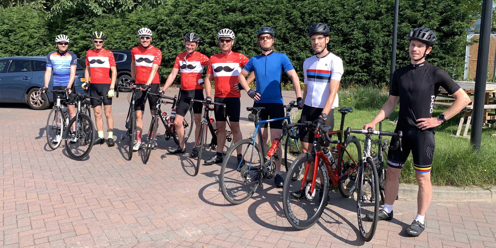
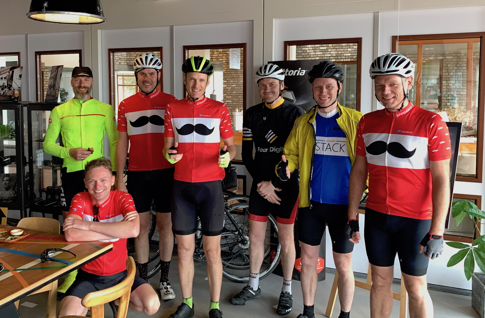
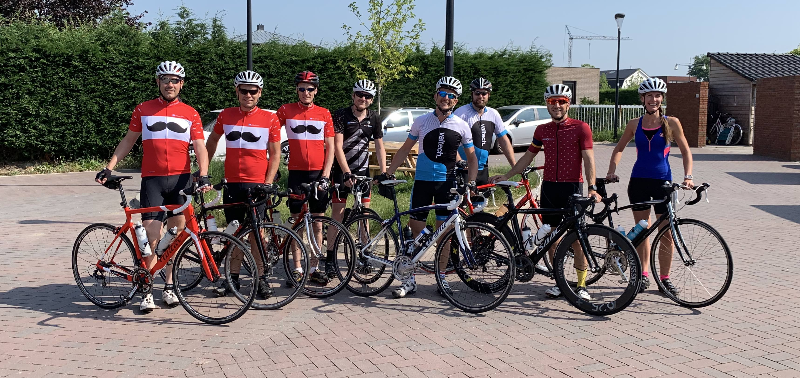
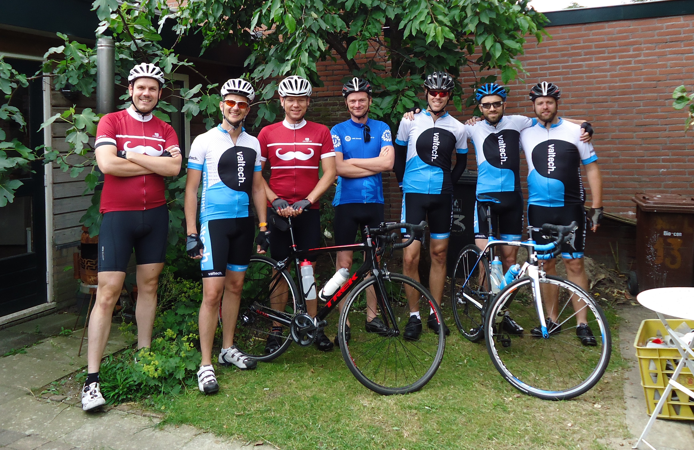
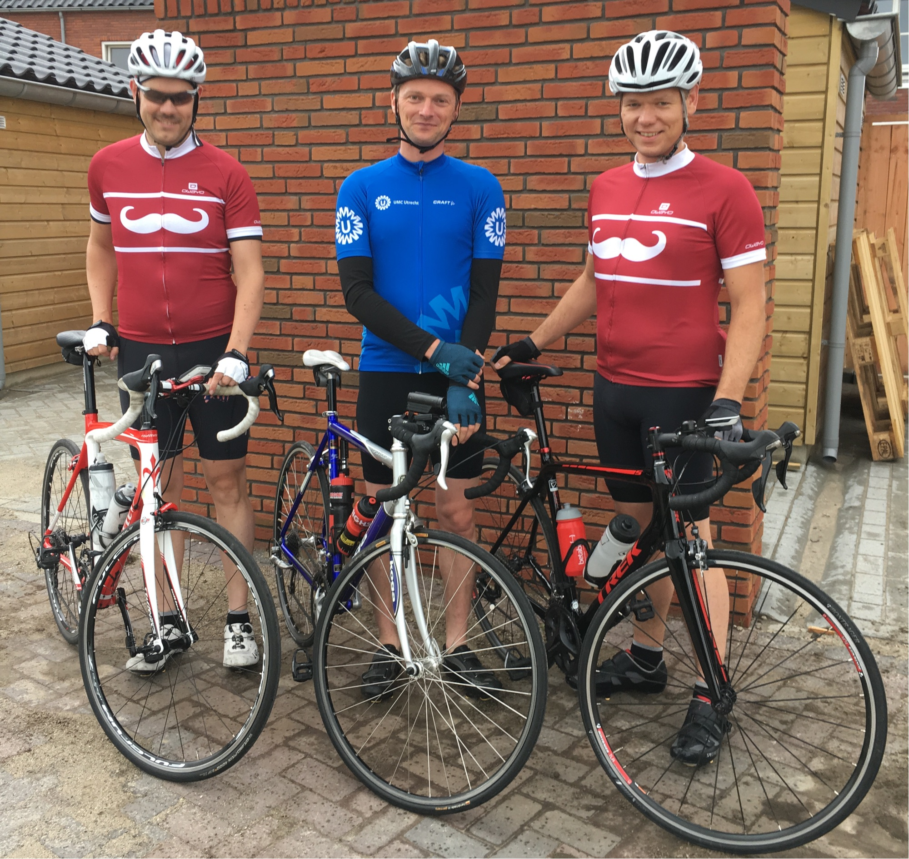
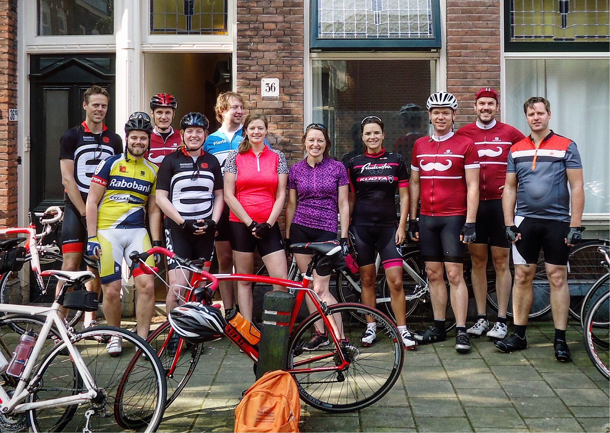
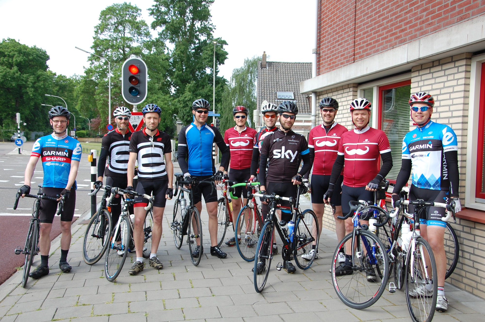
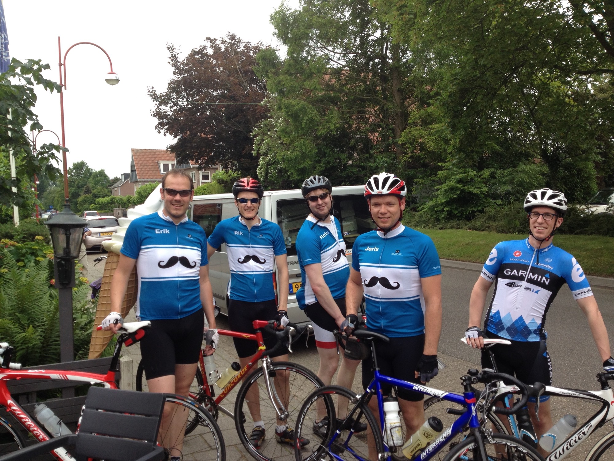
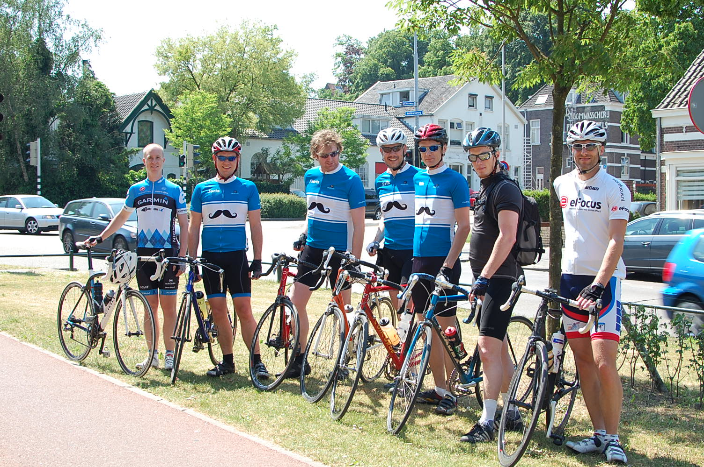

Omloop de Snor 2022
Tiende editie van de toertocht voor liefhebbers!
- Datum: ergens in 2022
- Starttijd: 10:00
- Start en finish: Utrecht
- Route: nog onbekend
Houd deze site of Mastodon in de gaten voor meer informatie. Voor een fijn stukje interactie kun je natuurlijk altijd terecht in onze Telegram groep
Eerdere edities
2021
De Eikenprocessierups editie
- 3 juli 2021
- Lent
- 101 km
- 385 hoogtemeters
- 8 deelnemers gestart
- Route op Komoot
- GPX van de route

2020
De Natte Heuvelrug editie
- 4 juli 2020
- Utrecht
- 122,14 km
- 538 hoogtemeters
- 7 deelnemers gestart
- Route op Google Maps
- GPX van de route

2019
De Overdekte Weergangen editie
- 30 juni 2019
- Nijmegen
- 108,34 km
- 437 hoogtemeters
- 10 deelnemers gestart
- Route op Strava
- GPX van de route

2018
Op de Koffie in Acquoy editie
- 24 juni 2018
- Utrecht
- 110,86 km
- 265 hoogtemeters
- 7 deelnemers gestart
- Aftermovie
- Route op Strava
- GPX van de route

2017
Les Deux Alpes editie
- 1 juli 2017
- Nijmegen
- 115,85 km
- 593 hoogtemeters
- 3 deelnemers gestart
- Aftermovie
- Route op Strava
- GPX van de route

2016
De Vrouwen editie
- 28 mei 2016
- Utrecht
- 118,20 km
- 234 hoogtemeters
- 11 deelnemers gestart
- Route op Strava
- GPX van de route

2015
De Stervende Zwaan editie
- 17 mei 2015
- Nijmegen
- 95,16 km
- 428 hoogtemeters
- 10 deelnemers gestart
- Route op Strava
- GPX van de route

2014>
De Ruif in Kudelstaart editie
- 7 juni 2014
- Utrecht
- 122,14 km
- 5 deelnemers gestart
- Aftermovie
- GPX van de route

2013
De Genesis editie
- 8 juni 2013
- Nijmegen
- 103,19 km
- 580 hoogtemeters
- 7 deelnemers gestart
- GPX van de route

Omloop weetjes
- Maar liefst 29 personen kunnen zeggen dat ze ooit in een Omloop zijn gestart.
- Editie 2016 was de best bezochte met 11 personen. Editie 2017 de slechtste met 3 personen.
- Er zijn in totaal 996,88 Omloop De Snor kilometers verreden door de jaren heen.
- In 2019 zijn tragere deelnemers voor het eerst eerder gestart. Hierdoor zat iedereen aan het einde van de dag rond hetzelfde tijdstip aan het bier! Nadeel is dat ze niet op de groepsfoto van 2019 staan.
- Voorafgaand aan de editie van 2014 werden er vrolijke opplak snorretjes, kostenloos door de organisatie verstrekt om het peloton een vrolijk aanzien te geven.
- In 2016 deden er voor de eerste keer vrouwen mee.
- De edities van 2014 en 2020 waren tot op de meter nauwkeurig even lang.
- Deelname is altijd kostenloos geweest en de organisatie bestaat volledig uit vrijwilligers die zich belangenloos inzetten!
- In 2021 werd het peloton geteisterd door de eikenprocessierups.
- In 2020 deden er voor het eerst alleen maar personen mee die al eerder De Omloop hadden gereden.
- Er bestaat geen wielrenfiets die in alle edities is gebruikt.
- Lang voor de eerste officiele editie is er in 2008 een mysterieuze "Editie 0" gereden. Over deze editie is weinig bekend maar doen de wildste verhalen de ronde. Van deze tocht zijn onlangs nieuwe beelden opgedoken die alles in een nieuw daglicht zetten. De vraag is of de onderste steen ooit boven komt.....
- Slechts twee personen hebben alle edities uitgereden.
- Editie 2016 heette in de volksmond ook wel "De Kastelenroute" omdat er zoveel kastelen langs de route lagen. In 2019 voerde route de deelnemers langs het kasteel in Hernen. Dit kasteel is het enige kasteel in Nederland met overdekte weergangen
- In 2015 was er bijna een herfst editie georganiseerd. Vanwege allerlei redenen ging die uiteindelijk niet door.
- In 2014 werd er gestopt bij Snackbar "De Ruif" in Kudelstaart. Wat er precies werd gegeten valt niet meer te achterhalen. Snackbar "De Ruif" bestaat inmiddels ook niet meer.
- Slechts 3 vrouwen hebben de Omloop ooit uitgereden.
- De Omloop is door Nederland en Duitsland gegaan.
- Tijdens De Omloop in 2019 werd cafe Het Ottertje in Ottersum aangedaan. Het Ottertje kreeg landelijke bekendheid toen het te zien was in Man Bijt Hond.
Geensnor op Strava